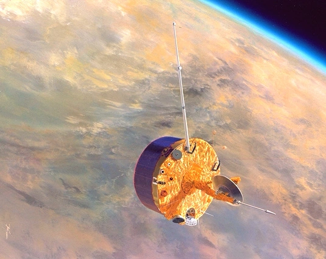

သောကြာဂြိုဟ်ဟာ နေနဲ့ ဒုတိယ အနီးဆုံး ဂြိုဟ်ဖြစ်ပါတယ်။ နေအဖွဲ့အစည်း အတွင်း သက်ရှိတွေ ရှာဖွေတဲ့ လေ့လာ စူးစမ်းမှု အများစုဟာ သောကြာဂြိုဟ်ကို ချန်လှပ် ထားလေ့ ရှိကြပါတယ်။
ဒါကလဲ သိပ်တော့ မထူးဆန်း လှပါဘူး။ သောကြာဂြိုဟ်ရဲ့ မျက်နှာပြင် အပူချိန်ဟာ ဒီဂရီ စင်တီဂရိတ် ၄၀၀ ကျော်ခန့် ရှိပြီး သူ့ရဲ့ လေထုကလဲကမ္ဘာ့လေထု ဖိအားထက် အဆ ၁၀၀ လောက် ပိုပြီး ပြင်းထန်ပါတယ်။ သောကြာဂြိုဟ် ပေါ်မှာ အက်ဆစ်မိုးတွေ ရွာသွန်းနေပြီး အက်ဆစ်ဟာ သက်ရှိတွေကို ဖျက်ဆီး ပစ်နိုင်တဲ့ ဓါတု ဒြပ်ပေါင်း တစ်ခု ဖြစ်ပါတယ်။ ဒီလို အခြေအနေမှာ သက်ရှိတွေ ရှင်သန် နိုင်မယ်လို့ ဘယ်သူကမှ ယူဆကြမှာ မဟုတ်ပါဘူး။
ဒီတော့ သိပ္ပံ ပညာရှင် အများစုဟာ သက်ရှိတွေ ရှာဖွေတဲ့ နေရာမှာ အင်္ဂါဂြိုဟ် (Mars) ပေါ်မှာပဲ သက်ရှိတွေ ရှာဖွေနိုင်ဖို့ ကြိုးစားကြတာ မဆန်းပါဘူး။ ဒါမှ မဟုတ်လဲ ဂျူပီတာရဲ့ အရံလတွေ ဖြစ်ကြတဲ့ ယူရိုပါ (Europa) နဲ့ အန်စီလေးဒပ်စ် (Enceladus) လတွေ ပေါ်မှာ ရှာဖွေ ကြပါတယ်။
အခု Nature Astronomy နက္ခတ် သုတေသန ဂျာနယ်ကြီးမှာ တင်ပြလာတဲ့ ဆောင်းပါးအရ ဆိုရင် ဗီးနပ်စ် (သောကြာဂြိုဟ်) ရဲ့ လေထု အတွင်းမှာ ဖော့စဖင်း (phosphine) အများအပြား ရှာဖွေ တွေ့ရှိ ထားပါတယ်။ ဒီ ဖော့စဖင်းဟာ သက်ရှိတွေရဲ့ ကိုယ်တွင်း ဓါတု ဓါတ်ပြုမှု ဖြစ်စဉ် တွေကနေ ထွက်ပေါ်လာတဲ့ ဒြပ်ပေါင်း တစ်မျိုး ဖြစ်ပါတယ်။
ဒါပေမယ့် အခုလို တွေ့ရှိတာကြောင့် ဗီးနပ်စ်ရဲ့ လေထုထဲမှာ သက်ရှိတွေ မှီတင်း နေထိုင် နေကြတယ် လို့တော့ ပြောလို့ မရပါဘူး။ ဘာကြောင့်ဆို ဖော့စဖင်းကို သက်မဲ့ ဓါတု ဖြစ်စဉ် တွေမှာလဲ ထုတ်ပေး နိုင်တာကြောင့် ဖြစ်ပါတယ်။ ဥပမာ နေရောင်ခြည်ကြောင့် ဖြစ်ပေါ်တဲ့ ဓါတု ပြောင်းလဲမှုတွေ၊ မီးတောင် ပေါက်ကွဲမှု၊ လျှပ်စီးလက်မှု တွေကနေထဲ ထွက်ပေါ် လာတတ်လေ့ ရှိကြပါတယ်။

ဒီ ကွန်ပြူတာ simulation ပြုလုပ်ရာမှာ ဗီးနပ်စ် ဂြိုဟ်ရဲ့ လေထုအတွင်း ဖော့စဖင်း ဒြပ်ပေါင်းတွေ ဖြစ်ပေါ်လာ နိုင်မယ့် အခြေအနေ အမျိုးမျိုးကို ပုံဖော် စမ်းစစ် ကြည့်ခဲ့ကြတာ ဖြစ်ပါတယ်။
ဒီ ကွန်ပြူတာ simulation အရ ဗီးနပ်စ် ဂြိုဟ်ရဲ့ လေထုအတွင်း ထွက်ရှိလာမယ့် ဖော့စဖင်း ပမာဏဟာ အနည်းအကျဉ်းသာ ရှိမယ် ဆိုတာကို တွေ့ရှိ လာခဲ့ ကြရပါတယ်။ ဒီ ပမာဏဟာ လက်တွေ့မှာ ဗီးနပ်စ်ရဲ့ လေထုအတွင်း ရှာဖွေ တွေ့ရှိ ထားတဲ့ ပမာဏထက် အရမ်းကို နည်းပါး နေပါတယ်။
တနည်းအားဖြင့် ပြောရရင် ဗီးနပ်စ် ရဲ့ လေထုအတွင်း သဘာဝ အလျှောက် ပေါ်ထွက်လာမယ့် ဖော့စဖင်း ပမာဏထက် အဆများစွာ ပိုမိုတဲ့ ဖော့စဖင်းတွေ ဘယ်က ရောက်လာသလဲ ဆိုတာနဲ့ ပတ်သက်လို့ ပညာရှင်တွေ အဖြေ မပေးနိုင်ဘူး ဖြစ်နေတာပါ။
ဒီတော့ ဒီပမာဏကို ဗီးနပ်စ်ရဲ့ လေထု ထဲက သက်ရှိတွေက ထုတ်ပေးတာ မဖြစ်နိုင် ဖူးလား ဆိုတဲ့ မေးခွန်း ထွက်ပေါ် လာရပါတယ်။
အခုလို သက်ရှိတွေနဲ့ ဆက်နွယ်တဲ့ ဒြပ်ပေါင်းတွေကို ဗီးနပ်စ်ရဲ့ လေထုထဲမှာ ရှာဖွေ တွေ့ရှိတာဟာ အခု အကြိမ်ဟာ ပထမဆုံး အကြိမ်တော့ မဟုတ်ပါဘူး။ အရင်ကလဲ ဒီလို သက်ရှိ ဓါတု ဒြပ်ပေါင်းတွေ ရှာဖွေ တွေ့ရှိ ခဲ့ဖူးပါတယ်။ ဒါပေမယ့် ပြဿနာက ဒီ ဒြပ်ပေါင်း တွေကို သက်ရှိတွေက ထုတ်ပေး နိုင်ရုံတင် မက အခြား သက်မဲ့ သဘာဝ ဖြစ်စဉ် အများအပြား ကနေလဲ ထုတ်ပေး နိုင်တာပဲ ဖြစ်ပါတယ်။
အခု ရှာဖွေ တွေ့ရှိတဲ့ ဖော့စဖင်း ကတော့ အရင် ဒြပ်ပေါင်း တွေနဲ့ မတူ ထူးခြားပါတယ်။ ဘာကြောင့်ဆိုတော့ ဒီ ဖော့စဖင်းကို အသက်ဇီဝ မရှိပဲ ထုတ်လုပ်ဖို့ ဆိုတာ အလွန် ခက်ခဲတာမို့ ဖြစ်ပါတယ်။ အထူးသဖြင့် ကျောက်တုံးကျောက်ဆိုင် တွေနဲ့ ဖွဲ့စည်း တည်ဆောက်ထားတဲ့ ဂြိုဟ်တစ်လုံး ပေါ်မှာ အသက်ဇီဝ ဖြစ်ထွန်းခြင်း မရှိပဲ ဖော့စဖင်း ထုတ်ပေးဖို့ ဆိုတာ အလွန် ခက်ခဲတဲ့ အခြေအနေ တခု ဖြစ်ပါတယ်။
အခုအထိ ဖော့စဖင်းကို ကမ္ဘာပေါ်မှာပဲ ရှာဖွေ တွေ့ရှိ ပါသေးတယ်။ ဒါကလဲ ကမ္ဘာပေါ်က သက်ရှိတွေက ဖော့စဖင်းကို ထုတ်ပေးလို့ပဲ ဖြစ်ပါတယ်။ ဒါ့ကြောင့်မို့ အခု ဗီးနပ်စ်ပေါ်မှာ ဖော့စဖင်း ရှာတွေ့တာဟာ ကမ္ဘာ အပြင်ဖက်မှာ ပထမဆုံး ရှာဖွေ တွေ့ရှိမှုပဲ ဖြစ်ပါတယ်။
အကယ်လို့ ဗီးနပ်စ်ပေါ်က ဖော့စဖင်းကို သက်ရှိတွေကသာ ထုတ်ပေးမယ် ဆိုရင် ဒီ သက်ရှိတွေဟာ အောက်ဆီဂျင် ကင်းမဲ့တဲ့ အခြေအနေမှာ အသက်ရှင်သန် ပေါက်ဖွားနိုင်တဲ့ Anaerobic သက်ရှိတွေ ဖြစ်မှာ ဖြစ်ပါတယ်။ ဒီလို သက်ရှိတွေဟာလဲ ဗီးနပ်စ်ရဲ့ မြေပြင်ပေါ်မှာ ပေါက်ဖွားတာထက် လေထုထဲမှာ ပျံနှံ့ ပေါက်ဖွားနေတာ ဖြစ်ဖို့ ပိုများပါတယ်လို့ ပညာရှင် တွေက သုံးသပ် တင်ပြ ကြပါတယ်။
ဒီ သက်ရှိတွေ အသက်ရှင် နေထိုင်တဲ့ လေထု အလွှာဟာ အလွန် ပါးလွှာတဲ့ အလွှာ တစ်ခု ဖြစ်ဖို့ များပါတယ်။ ဒီအလွှာဟာ ပြင်ထန် ကြမ်းတမ်းတဲ့ အခြား လေထု အလွှာ နှစ်ခုကြားက အလွှာ တစ်ခု ဖြစ်ဖို့ ပိုများပါတယ်။
ဒါဆို ဒီ အလွှာ ကြားထဲကို အသက်ဇီဝ ဘယ်လို ရောက်သွား ခဲ့ရတာလဲ။
လွန်ခဲ့တဲ့ နှစ်သန်းပေါင်း ရာထောင် ချီတဲ့ အချိန်က ဗီးနပ်စ် ပေါ်မှာ ပင်လယ် သမုဒ္ဒရာ တွေ ဖြစ်ထွန်းခဲ့မယ်လို့ ယူဆ ရပါတယ်။ အဲ့သည် အချိန်ကတော့ ဗီးနပ်စ်ဟာ အခု ကမ္ဘာလိုပဲ နေပျော်တဲ့ ဂြိုဟ်တစ်စင်း ဖြစ်ခဲ့ဟန် တူပါတယ်။
ဒါပေမယ့် တဖြည်းဖြည်း ပတ်ဝန်းကျင် အခြေအနေတွေ ပြင်ထန် ကြမ်းတမ်း ဆိုးဝါးလာတဲ့ အခါမှာတော့ ဗီးနပ်စ် ပေါ်က အသက်ဇီဝ ဟာလဲ ဆက်လက် ရှင်သန် နိုင်ရေးအတွက် လိုက်လျောညီထွေ ပြောင်းလဲဖို့ လိုအပ် လာခဲ့မှာ ဖြစ်ပါတယ်။ ဒီတော့ သူတို့ ဆက်လက် အသက်ရှင်သန် နိုင်မယ့် လေထု အလွှာ ပါးလေးမှာ ဆက်လက် ရှင်သန် ပေါက်ဖွား နေထိုင် နေခဲ့ကြတာ ဖြစ်ဖို့ များပါတယ် လို့ ပညာရှင် တွေက ယူဆ ကြပါတယ်။
ဒီလို တွေးဆ ကြပေမယ့် ဖော့စဖင်းကို ရှာဖွေ တွေ့ရှိမှု တခုတည်း နဲ့တော့ ဗီးနပ်စ်ပေါ်မှာ အသက်ဇီဝတွေ ရှင်သန် ပေါက်ဖွား နေမယ်လို့ ပြောလို့ မရပါဘူး ဆိုတာကိုတော့ ပညာရှင် တွေက ထောက်ပြ ကြပါတယ်။ ဒါပေမယ့် အခု တွေ့ရှိချက်ဟာ အတော်လေး ထူးခြားတဲ့ တွေ့ရှိချက် ဖြစ်တယ် ဆိုတာကိုတော့ ဝန်ခံ ကြပါတယ်။
ဗီးနပ်စ် ပေါ်မှာ အသက်ဇီဝ ရှိတယ် မရှိဘူး ဆိုတာ အသေအခြာ သိရအောင် ဆိုရင်တော့ ဗီးနပ်စ်ရဲ့ လေထုထဲကို ဝင်ရောက်ပြီး စူးစမ်း လေ့လာမယ့် လေ့လာရေး ယာဉ်တွေ စေလွှတ် လေ့လာဖို့ လိုမယ် ဆိုတာကို ပညာရှင် တွေက ထောက်ပြ ကြပါတယ်။